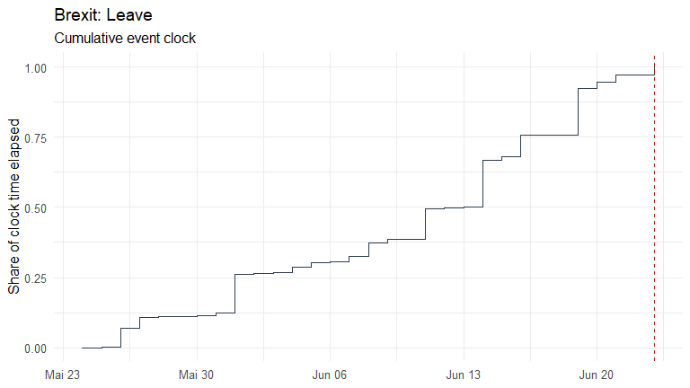

eventclock measures event-clock (information) time ahead of scheduled events — referendums, elections, central-bank decisions — from traded event probabilities such as prediction-market prices. Event-clock time is the quadratic variation of the log-odds of the traded event probability: how much outcome-relevant information arrived, and when.
The package implements the estimators, closed-form calculators, and datasets of the working paper
Hanke, M., Schadner, W., Stöckl, S., and Weissensteiner, A. (2026). Learning Before Scheduled Events: Prediction Markets, State Prices, and Option Valuation. Working Paper.
Features
-
as_event_prices()— standardize any probability series (prediction markets, betting quotes, state prices) with flag-don’t-drop cleaning; convertersq_from_price()(discount / overround),q_from_ffutures()(fed funds futures, 25bp grid), andq_from_deal_spread()(merger-arb deal clocks); data screening withec_validate(). -
event_clock()— realized-variation estimator of with truncation, bipower, and largest-move robustness variants, plus standard errors and confidence intervals (se = TRUE, quarticity or wild bootstrap);event_clock_path()for the cumulative clock over time;event_clock_forecast()for the trailing-window real-time benchmark;ec_signature()for the sampling-frequency (microstructure) diagnostic. -
Assets & finance —
event_beta(): realized event exposures from returns with Newey-West errors and the loading test against an external exposure;ec_relevance(): the sufficient statistic for pricing relevance. -
Formula book — closed-form calculators in :
ec_moments(),ec_exceedance(),ec_revision(),ec_atm_event_call(),ec_sigma_eff(),ec_variance_share(),ec_iv_rule(),ec_target_clock(); exact transition law and simulators with lumpy-information jumps (ec_transition_density(),ec_simulate(),ec_simulate_path()). -
Polymarket connector —
pm_search(),pm_markets(),pm_prices(),pm_daily()on the public, keyless Gamma/CLOB APIs. -
Datasets —
brexit2016,us2016(the working paper’s event windows),polymarket2024(hourly 2024 U.S. election prices),djt2024(the matching exposed stock), andfomc_meetings(2021-2027 FOMC calendar). -
Plots —
plot_q(),plot_clock(),plot_clock_vs_calendar(),plot_signature().
Quick start
library(eventclock)
ep <- as_event_prices(brexit2016,
time = "date", price = "q_leave",
market_id = "Brexit: Leave", event_date = as.Date("2016-06-23")
)
# the working paper's headline estimates
event_clock(ep,
from = as.Date("2016-05-24"),
to = c(`1W` = as.Date("2016-05-31"), `2W` = as.Date("2016-06-07"),
`1M` = as.Date("2016-06-23"))
)
#> # A tibble: 15 × 10
#> market_id from to horizon n_obs n_incr n_gaps max_gap_days
#> <chr> <date> <date> <chr> <int> <int> <int> <dbl>
#> 1 Brexit: Leave 2016-05-24 2016-05-31 1W 8 7 0 1
#> 2 Brexit: Leave 2016-05-24 2016-05-31 1W 8 7 0 1
#> 3 Brexit: Leave 2016-05-24 2016-05-31 1W 8 7 0 1
#> 4 Brexit: Leave 2016-05-24 2016-05-31 1W 8 7 0 1
#> 5 Brexit: Leave 2016-05-24 2016-05-31 1W 8 7 0 1
#> 6 Brexit: Leave 2016-05-24 2016-06-07 2W 15 14 0 1
#> 7 Brexit: Leave 2016-05-24 2016-06-07 2W 15 14 0 1
#> 8 Brexit: Leave 2016-05-24 2016-06-07 2W 15 14 0 1
#> 9 Brexit: Leave 2016-05-24 2016-06-07 2W 15 14 0 1
#> 10 Brexit: Leave 2016-05-24 2016-06-07 2W 15 14 0 1
#> 11 Brexit: Leave 2016-05-24 2016-06-23 1M 31 30 0 1
#> 12 Brexit: Leave 2016-05-24 2016-06-23 1M 31 30 0 1
#> 13 Brexit: Leave 2016-05-24 2016-06-23 1M 31 30 0 1
#> 14 Brexit: Leave 2016-05-24 2016-06-23 1M 31 30 0 1
#> 15 Brexit: Leave 2016-05-24 2016-06-23 1M 31 30 0 1
#> # ℹ 2 more variables: method <chr>, A <dbl>
plot_clock(event_clock_path(ep, from = as.Date("2016-05-24")))
Live data from Polymarket:
mkts <- pm_markets("presidential-election-winner-2024")
tok <- mkts$token_id[grepl("Trump", mkts$question) & mkts$outcome == "Yes"]
ep24 <- pm_prices(tok, from = "2024-06-01", to = "2024-11-06")
event_clock(pm_daily(ep24))(An alternative community client for the same APIs is polymarketR.)
See the vignette for the full tour: vignette("eventclock-brexit", package = "eventclock").
Citation
citation("eventclock")Please cite the working paper above when you use the event-clock methodology.